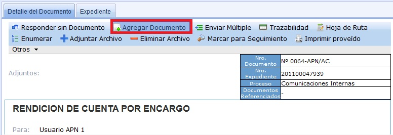
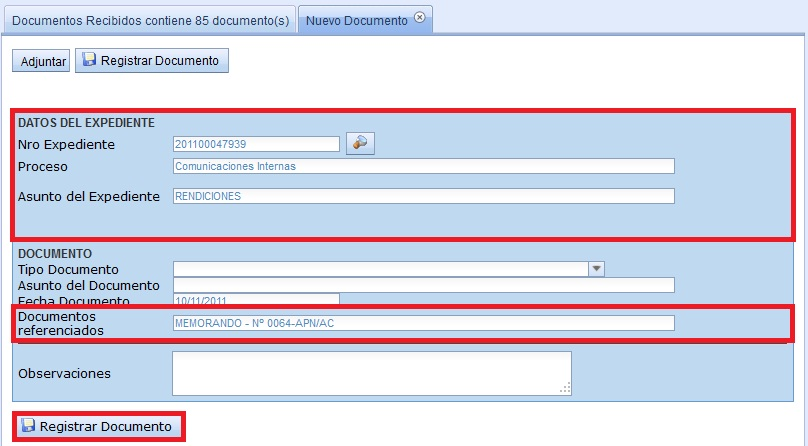

Agregar Documento:
Seleccionamos Agregar Documento.

De manera automática los campos Nro. Expediente, Proceso, Asunto del Expediente y Documentos Referenciados aparecen completados. En la sección Documento, el usuario ingresa los campos Tipo Documento, Asunto del Documento, Fecha Documento. En la sección Numeración del Documento, el usuario puede marcar la casilla de Enumerar, cuando se desee generar un Número para el Documento. De manera opcional se puede poner alguna Observación.
Finalmente, seleccionamos Registrar Documento.
(*) Esto significa que agregas un documento al Expediente.

Una vez Registrado el Documento, este se encuentra en la Bandeja de Mis Documentos.
Created with the Personal Edition of HelpNDoc: Full featured multi-format Help generator